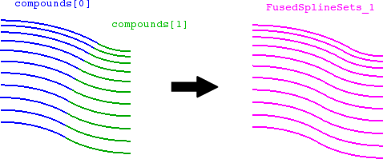
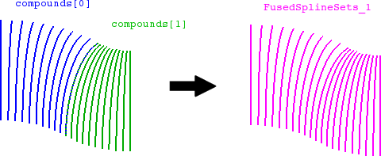

cfdmsh 4.0 documentation
cfdmsh 4.0 documentation cfdmsh 4.0 documentation


Fuses two sets of splines.
-
def FuseSplineSets( compounds = [None], np = 20, curv = True, tol = 1e-7, add = True ):


| Name | Description | Type | GUI selection [?] | Selection by name [?] | Recursive [?] | Default value |
|---|---|---|---|---|---|---|
| compounds | The spline sets to fuse. | List of 2 Compounds of Edges |
yes | yes | - | [None] |
| np | See here. | Integer | - | - | - | 20 |
| curv | See here. | Boolean | - | - | - | True |
| tol | See here. | Float | - | - | - | 1e-7 |
| add | See here. | Boolean | - | - | - | True |
| dim Value [?] | single Value [?] | Type | Number | Name |
|---|---|---|---|---|
| - | - | Compound of Edges | 1 | "FusedSplineSets" |
from cfdmsh import * # To adapt to the cfdmsh installation method
import math
vertex_1 = geompy.MakeVertex(0, 0, 0)
vertex_2 = geompy.MakeVertex(0, 0, 100)
vertex_3 = geompy.MakeVertex(0, -50, 0)
arc = geompy.MakeArcOfEllipse(vertex_1, vertex_2, vertex_3)
vertex_4 = geompy.MakeVertex(0, -150, 0)
vertex_5 = geompy.MakeVertex(0, 50, 0)
extrusion_1 = geompy.MakePrismDXDYDZ(vertex_4, 0, 0, 100)
extrusion_2 = geompy.MakePrismDXDYDZ(vertex_5, 0, 0, 100)
revolution_1 = geompy.MakeRevolution(arc, extrusion_1, 45*math.pi/180.0)
revolution_2 = geompy.MakeRevolution(arc, extrusion_2, 45*math.pi/180.0)
spline_set_1 = RebuildFace(10, revolution_1, dim = 1, add = False)
spline_set_2 = RebuildFace(10, revolution_2, dim = 1, add = False)
spline_set_3 = RebuildFace(10, revolution_1, dim = 1, add = False, switch = True)
spline_set_4 = RebuildFace(10, revolution_2, dim = 1, add = False, switch = True)
AddToStudy([spline_set_1, spline_set_2, spline_set_3, spline_set_4], "splineSet")
fused_spline_set_1 = FuseSplineSets([spline_set_1, spline_set_2])
fused_spline_set_2 = FuseSplineSets([spline_set_3, spline_set_4])
Input spline sets must be coinciding, that is sharing boundary nodes or edge.
tougeron-cfd.com © 2016